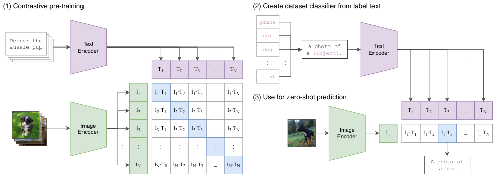
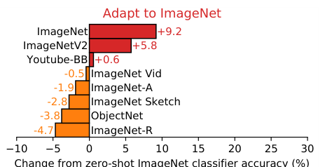

CLIP's robustness came from its data, a cause the paper floated and left open
A caption-matching model matched a supervised ResNet-50 on ImageNet with none of its labels and held up under natural distribution shift, a robustness later work traced to the training data the paper had only floated.
Learning Transferable Visual Models From Natural Language Supervision
Read the paperState-of-the-art computer vision systems are trained to predict a fixed set of predetermined object categories. This restricted form of supervision limits their generality and usability since additional labeled data is needed to specify any other visual concept. Learning directly from raw text about images is a promising alternative which leverages a much broader source of supervision. We demonstrate that the simple pre-training task of predicting which caption goes with which image is an efficient and scalable way to learn SOTA image representations from scratch on a dataset of 400 million (image, text) pairs collected from the internet. After pre-training, natural language is used to reference learned visual concepts (or describe new ones) enabling zero-shot transfer of the model to downstream tasks. We study the performance of this approach by benchmarking on over 30 different existing computer vision datasets, spanning tasks such as OCR, action recognition in videos, geo-localization, and many types of fine-grained object classification. The model transfers non-trivially to most tasks and is often competitive with a fully supervised baseline without the need for any dataset specific training. For instance, we match the accuracy of the original ResNet-50 on ImageNet zero-shot without needing to use any of the 1.28 million training examples it was trained on. We release our code and pre-trained model weights at https://github.com/OpenAI/CLIP.1
Vision models could only name their training labels
A standard image classifier learns a fixed row of output units, one per category it was trained on. To recognize a category it never saw in training, you collect labeled examples of that category and train again. The vocabulary is baked into the weights, and widening it costs another labeling pass. CLIP's claim is that the vocabulary does not have to live in the weights at all. Train an image encoder and a text encoder together on raw (image, caption) pairs, and at test time you can name a new category by writing it down: the text encoder turns the words into the classifier.1
Two results come out of that setup, and they are worth keeping apart. The famous one is parity: CLIP matches a supervised ResNet-50 on ImageNet having seen none of ImageNet's labels. The more testable one sits beside it. CLIP's zero-shot classifier stays accurate under natural distribution shift, the regime where an ImageNet-trained network's accuracy falls away, and it closes most of the gap those models leave open.1 The first is a demonstration. The second raises a question about cause, and the record since 2021 can now answer it.
One similarity matrix, read in two directions
The training task is a matching problem over a batch. Sample a batch of N aligned (image, caption) pairs. The image encoder maps each image to a feature vector, and the text encoder maps each caption to a feature vector. A learned linear projection sends both into one shared space, and each projected vector is L2-normalized to unit length. Call the resulting unit vectors I^{e}_{i} for images and T^{e}_{j} for texts.1
Because the vectors are unit length, their dot product is the cosine similarity between an image and a caption. Scale that similarity by a learned temperature and it becomes a logit: s_{ij} = \exp(t)\,\langle I^{e}_{i},\, T^{e}_{j}\rangle. Stacking every pair gives an N \times N grid of logits. In a batch of N pairs there are exactly N correct image-caption matches, the diagonal, and N^{2}-N incorrect pairings everywhere else.1 The training signal is: push each image's score for its own caption above its scores for the other N-1 captions, and symmetrically for each caption over the images. That is just a classification problem read off the grid, once down the columns and once across the rows.
Read that way the objective is two ordinary cross-entropies sharing one grid. Each row is a softmax over texts for a fixed image; each column is a softmax over images for a fixed text; the correct class in both is the diagonal index. Average the two and you have CLIP's loss.
- e^{\,s_{ii}}The matched pair on the diagonal, the one correct answer for both row and column i.
- \sum_{j} e^{\,s_{ij}}Normalizer over every caption for image i: the image-to-text softmax across a row.
- \sum_{j} e^{\,s_{ji}}Normalizer over every image for caption i: the text-to-image softmax down a column.
- \frac{1}{2N}Averages the two directions over the batch, so neither modality is the privileged query.
The temperature carries more than it looks. Written as \exp(t) with t a directly learned scalar, it sets how sharply the softmax separates the matched pair from its competitors. The paper initializes it near the equivalent of 0.07 and clips the scaling at a maximum of 100, because letting the network drive the logits arbitrarily high destabilizes training.1 The batch is the other quiet design choice. With a batch size of N = 32{,}768, each image is discriminated against tens of thousands of competing captions at once, so a single step is a hard classification rather than a single positive-negative comparison.1
Nothing in the loss is new in isolation. Cosine similarity, a softmax, cross-entropy, a temperature: the assembly is what does the work. Panel (1) of the paper's own summary figure draws exactly this grid, with the diagonal shaded as the positives, and the same similarity operation reappears in the two panels that follow.

The text encoder writes the classifier
A trained CLIP has no output layer for ImageNet's thousand classes,
because it was never told about them. It builds one at inference from
the class names. Take each class name, wrap it in a prompt (the
default is A photo of a {label}.), and pass the prompt
through the text encoder. The resulting unit vector is that class's
weight vector. Do this for all one thousand ImageNet classes and you
have assembled a linear classifier whose weights were written by the
text encoder rather than learned by gradient descent on labeled
images.1
Classifying an image is then the same scaled cosine similarity as training, now scored against the class vectors and normalized over classes:
The paper's own framing is the cleanest way to hold this. The classifier is a multinomial logistic regression with L2-normalized inputs, L2-normalized weights, no bias, and temperature scaling. The text encoder is the hypernetwork that writes those weights from the class descriptions.1 Nothing about the image side changed. The category vocabulary moved out of the weights and into a string you can edit.
Because the vocabulary is now text, how you phrase it matters. A bare class name is a worse query than a short caption, since the encoder was trained on captions, not nouns. The single default prompt buys about 1.3\% on ImageNet over feeding the bare label. Ensembling 80 different prompts and averaging their class vectors adds about another 3.5\%. Across 36 datasets the two together are worth roughly 5 points on average, a gain the paper compares to spending four times the compute on the encoder.1
With that assembly, the best CLIP model reaches 76.2\% zero-shot top-1 on ImageNet, level with the original supervised ResNet-50 and far above the 11.5% that the earlier Visual N-Grams zero-shot attempt managed on the same benchmark.1 The parity is the demonstration: a caption-matching objective, with no ImageNet labels, produces a classifier as accurate as one trained on 1.28 million of them.
CLIP shipped its trained weights and the loss as runnable code, so the objective above describes an artifact anyone can load and inspect.2
Robust where supervised models fall off
The second result needs a definition first. Take an ImageNet model and test it on a dataset built to depict the same classes under a natural shift: ImageNetV2's fresh collection, ImageNet-R's art and renditions, ObjectNet's cluttered rotations, ImageNet Sketch's line drawings, ImageNet-A's hard natural images. Accuracy drops. A ResNet-101 that reaches 76.2% on the ImageNet validation set makes roughly five times as many mistakes on these shifts as it does in distribution.1
Some of that drop is expected: a weaker model is worse everywhere, in distribution and out. The question is whether a model is worse under shift than its in-distribution accuracy already predicts. Taori and colleagues named this split. Effective robustness is accuracy under shift above what a model's in-distribution accuracy would lead you to expect; relative robustness is any out-of-distribution gain at all. Across 204 ImageNet models in 213 test conditions they found that robustness to synthetic perturbations did not transfer to natural shift, and that almost no training technique bought effective robustness. The one lever that moved it was training on larger and more diverse data.3 CLIP adopts that framework and reports the result on its testbed: the zero-shot classifier reduces the effective-robustness gap that standard ImageNet models leave open by up to 75%, averaged over seven natural-shift datasets.1

This is the point at which the paper's reading is easy to overstate, so it is worth quoting what the paper actually said. Section 3.3 opens with the intuition that a zero-shot model should not be able to exploit the spurious correlations a supervised model picks up, since it never trained on the shifted distribution. But when the authors ask what causes the robustness, they decline to credit the objective or the zero-shot protocol.
While these results show that zero-shot models can be much more robust, they do not necessarily mean that supervised learning on ImageNet causes a robustness gap. Other details of CLIP, such as its large and diverse pre-training dataset or use of natural language supervision could also result in much more robust models regardless of whether they are zero-shot or fine-tuned.1 Radford et al., Section 3.3
The paper then ran an experiment that cut against its own intuition. Fitting an L2-regularized logistic regression on CLIP's frozen features to ImageNet's training set raised ImageNet accuracy by 9.2 points, to 85.4%. It did not improve average accuracy under shift. Per dataset it lost ground: 4.7 points on ImageNet-R, 3.8 on ObjectNet, 2.8 on ImageNet Sketch, 1.9 on ImageNet-A.1 If the zero-shot evaluation were what conferred the robustness, keeping the same features and only swapping the zero-shot head for a fitted one should not selectively erode the shifted datasets while improving the in-distribution one. It did exactly that.

So the paper left the question honestly open. It demonstrated a robust zero-shot classifier, named its large and diverse pre-training data as one candidate explanation among several, and wrote that it did not have confident answers about the cause.1 Everything after 2021 is an answer to that open question, not a correction of a claim the paper made.
Vary the data, and the robustness follows
Isolating a cause takes a controlled comparison, and the confound in CLIP is that four things change at once against a supervised baseline: the training set size, the training distribution, the natural-language supervision, and the contrastive loss. Fang and colleagues broke them apart. They listed five candidate causes: training set size, training distribution, language supervision at training time, language supervision at test time, and the contrastive loss. Then they varied each while holding the rest fixed.4
Two moves carry the result. To vary supervision on fixed data they built ImageNet-Captions, ImageNet's own images paired with their original Flickr captions, and trained CLIP on it: the caption-matching objective on ImageNet's distribution does not produce a robust model. To vary data on fixed supervision they trained standard supervised classifiers on CLIP's web data: those gain robustness. Language supervision and the contrastive loss drop out, then, and neither confers robustness on its own. The diverse training distribution is the main cause, and the other four factors contribute little to none.4
Train CLIP's objective on ImageNet's images and the robustness does not appear; train a plain classifier on CLIP's data and it does.
That answer confirms the candidate CLIP had floated and rules out the reading its intuition leaned toward. It also lands where an earlier survey had pointed: Taori and colleagues had already found, before CLIP was published, that more diverse training data was the one lever that reliably moved effective robustness.3 CLIP was the striking instance of that lever; the follow-on isolated the lever from the objective wrapped around it.
Two refinements keep the finding from being flattened into a slogan. The first is that "more data" is the wrong summary. Nguyen and colleagues built a testbed of six public sources and found that CLIP's robustness varies substantially with which source it trains on. Naively mixing sources does not help; it often dilutes the robustness of the best single source instead of adding to it.5 The right statement is that the composition of the training distribution determines robustness, not its sheer size or a raw count of images. The second is scale as a separate axis. Training CLIP-style models on up to two billion LAION pairs yields clean power-law scaling on zero-shot tasks. Yet the OpenAI-data and LAION-data models scale with different exponents, despite identical architectures and similar recipes.6 Same math, different data, different behavior, on an open reproduction that does not depend on OpenAI's private set.
One caution about the weight to put on this. The controlled experiments that isolate the data, from the effective-robustness framework through the five-cause ablation and the source-composition testbed, come largely from one research group and its collaborators.345 The work is peer-reviewed and its comparisons are controlled, and no source I found disputes it, but it has not yet been reproduced by an unrelated lab. The finding is well supported; it is not yet a multi-lab consensus, and it should be held as the former.
Reading Section 3.3 with the follow-on in hand
The credit for CLIP's robustness belongs to the pre-training distribution, and that credit is not free. The property Fang credits, broad and uncurated web diversity, is the same property that lets harmful content through. Birhane and colleagues audited LAION-400M, a dataset built by parsing Common Crawl image-alt-text pairs and filtered with CLIP itself, and documented explicit sexual, misogynist, and racist content that the automated filtering did not remove.7 CLIP's own bias probe points the same way from inside the paper. Run zero-shot on face images against a label set augmented with non-human categories, and Black faces are sorted into a non-human category at 14.4%, above every other group. The misclassification swings sharply when a single label such as "child" is added or removed from the candidate set.1 Both the robustness and the harm trace to uncurated web-scale data.
The reliability story is narrower than the headline invites, too. A later audit of 83 CLIP models against 127 ImageNet classifiers found that the training source shapes safety-relevant properties strongly, which is the data-drives-behavior finding again, but also that CLIP's often-cited calibration advantage does not consistently hold.8 "CLIP is simply more reliable" is not what the record supports. "CLIP's behavior, good and bad, tracks its training source" is.
What survives all of this is the demonstration the paper actually made, and it is a strong one. A caption-matching objective, with the zero-shot construction built from label text, yields a classifier that matches a supervised baseline on ImageNet and stays accurate under natural shift. The reconstruction of the objective shows why the parity is unsurprising in hindsight: it is ordinary cross-entropy over a similarity grid, at a batch size and data scale that make the discrimination hard. The one claim to retire is the intuitive one the paper voiced and hedged, that the zero-shot evaluation or the language supervision is what buys the robustness. Its own adaptation experiment argued against it, and the controlled follow-on settled it: the cause is the data.
CLIP's two headline results stand: zero-shot parity with a supervised ResNet-50, and a real effective-robustness gain over standard ImageNet models.1 The robustness comes from the pre-training distribution, not the language objective or the zero-shot protocol, which confirms the candidate the paper named in Section 3.3 and rules out the reading its intuition preferred.4 Two things would change the assessment: an independent lab failing to reproduce the data-varies-robustness result on new sources, or a controlled study showing the contrastive objective adds robustness once the data is held fixed. Until then, the safe reading is that CLIP proved you can classify from label text, and its data, not its captions, is what made that classifier hold up.5
Sources
- arXiv · Radford et al., Learning Transferable Visual Models From Natural Language Supervision (CLIP)
- OpenAI · CLIP code and pre-trained weights
- arXiv · Taori et al., Measuring Robustness to Natural Distribution Shifts in Image Classification
- arXiv · Fang et al., Data Determines Distributional Robustness in Contrastive Language Image Pre-training (CLIP)
- arXiv · Nguyen et al., Quality Not Quantity: On the Interaction between Dataset Design and Robustness of CLIP
- arXiv · Cherti et al., Reproducible Scaling Laws for Contrastive Language-Image Learning (OpenCLIP)
- arXiv · Birhane et al., Multimodal Datasets: Misogyny, Pornography, and Malignant Stereotypes
- arXiv · Tu et al., A Closer Look at the Robustness of Contrastive Language-Image Pre-Training (CLIP)